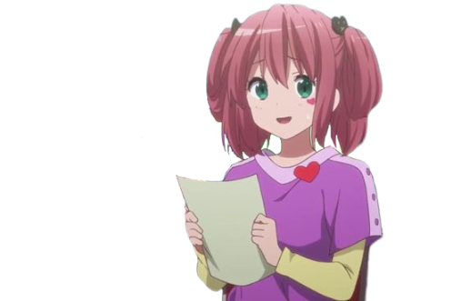

圖源: 巴哈姆特
是動畫《中二病也要談戀愛！》的角色，她是富樫勇太的童年好友。智音和勇太一樣，曾經是一名“中二病”患者， 自稱為“蘇菲婭寧·SP·撒旦七世”、“魔法魔王少女索菲亞”、“管理魔王魔法七聖地的少女”等稱號，並使用幻想力量 來逃避現實生活的挑戰和困難。兒時沉溺於幻想，而成為了中二病患者，也把中二思想過分的帶入生活中，和富樫 勇太關係十分好。以前和富樫勇太在一起的時候就已經對勇太充滿了好感， 只是表現完全不坦率，一直都沒有將自 己的心聲說出來。
個性開朗且有些笨拙，是一個善良到連惡魔都忍不住傷害的女孩。喜歡將“有沒有哭泣，心痛不痛”看作與天使的作戰。 十分樂天，雖然十分中二，但有著比同齡人還要成熟的情感觀。她是一個充滿幻想和活力的人，總是以中二的姿態面 對世界。雖然她表現得很開心，但她內心其實隱藏著對勇太的感情，並且面臨著接受現實和維持幻想之間的掙扎。
智音有著粉紅色的頭髮綁成了雙環結構（環形辮），裝扮有貓咪髮卡、稍微改造成了魔法魔王少女樣式的制服、繫著好 像魔物般的長圍巾（第二次出現因為太熱了沒有帶）、黑色長筒襪、腰間有一個一直帶著的貓狀小袋子、裙子下面有短 短的黑色的短裹腿恤，比起雙馬尾，其實更喜歡側馬尾髮型。但因為執著於中二病，而以雙馬尾的髮型示人，她十分喜 歡各種帶有奇幻氣息的服飾品，身上也經常帶著魔法棒。
Cherub（智天使）
詠唱:Seraph（熾天使）
降臨:Physical Linkage（世間萬物為我所用）
在動畫第二季中，在動畫第二季《中二病也要談戀愛！戀》中，智音轉學到勇太的學校，重新出現在他的生活中。雖然 他們的友誼迅速恢復，但智音逐漸發現，勇太已經和另一名女孩，小鳥遊六花，建立了特殊的感情。這讓智音不得不面 對自己內心深處一直隱藏的情感——她對勇太的愛慕之情。智音在多年以來一直把這份感情埋藏在心中，而與勇太的再次 相遇讓她不得不直視這段未曾表露的愛。智音的最大掙扎在於她對勇太的感情以及她對“中二病”幻想世界的依戀。她始 終抱著中二病的幻想，作為一種逃避現實的方式。對於智音而言，“蘇菲婭寧·SP·撒旦七世”的身份讓她有勇氣面對現實 中的困難。然而，當她發現勇太已經在現實世界中找到了另一個依靠（六花），她開始動搖，這使得她必須在維持幻想 與面對現實之間做出選擇。在經歷了與勇太和六花的互動後，智音最終選擇了接受現實，並決定放下對勇太的愛慕。這 對她來說是一個艱難的過程，但同時也是她個人成長的標誌。她明白到自己的感情無法得到回應，因此，她將這段愛情藏 在心底，繼續以她自己的方式生活下去。
